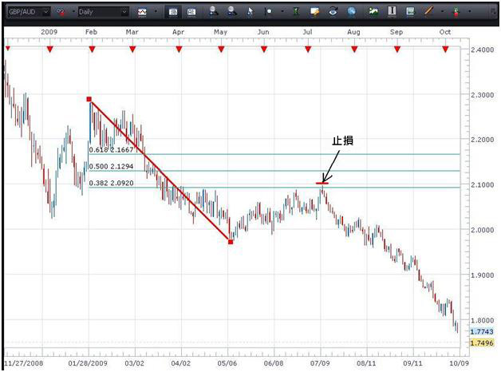

MS
止損及限價
設置止損及限價是達致成功交易的重要一環。在交易附加止損，將會遜於目前價格的一個預設價位將交易平掉。試想像它們是一個安全網，這將可防止您就此項交易招致更多虧損。止損往往會根據交易者帳戶大小的某一個虧損百分比，或根據支援位元及阻力位元而設置。這是其中兩種較為廣泛使用的標準。無論採取何種方法，對每項交易設置保護性止損都是十分重要的。若沒有設置它們，交易者便可能會招致極大的損失。
限價可使交易者平掉持倉，但卻是在高於目前的價格平掉。限價往往也是以支持或阻力位為基礎，但有時候它們亦以風險回報比率為基礎。您可以視限價為交易的"目標"，即在市場向有利於您的方向移動時您希望離場的價位。儘管很多人不認為限價對審慎交易的重要性跟止損相同，但限價對於協助交易者作出何時平掉交易此一關鍵性決定時卻相當有用。
止損的設置
基本上，保護性止損應在圖表上符合邏輯的位置設置，即如果我們的交易假設是正確的話，市場"不會買賣"的位置。讓我們看看圖表以說明這一點。
在上圖所描述的交易情景，貨幣對正處於跌勢。它亦順應我們在圖表上所畫的趨勢線。以此為基礎，每次買賣價升至趨勢線的阻力位，而蠟燭的收市價並沒有升穿該線段，我們便可建立短倉。我們可以看到，貨幣對升至趨勢線，但收市價卻沒有升穿該水準。我們可以在該點出售貨幣對。
我們的交易止損可以設置於趨勢線之上，以使貨幣對有一點喘息的空間。若我們正正在貨幣對買賣的水準設置止損，便可能要承受買賣價再次升至該相同的水準，然後在買賣價朝有利於我們的方向移動前便平掉交易的風險。由於這是日圖(時間段越長，止損距離應該越闊)而且英鎊/澳元是波幅較大的貨幣對，我們給予止損的喘息空間應較波幅較小的貨幣對的1小時圖更多。我們將止損設置在"貨幣對應不會買賣"的部份。若貨幣對真的在這個部份買賣，我們便想平掉交易，因為趨勢線已不復存在，而我們的交易計畫亦不再有效。
在此情況下，在趨勢線以上50 – 75點區間的止損可能屬合宜。這將容許價格在趨勢線之上一個適中的程度形成尖型，而又不會使交易被平掉。
現在看看另外數個厘定止損的方法。

使用相同的圖表，但使用黃金回調比率(Fibonacci Retracement)工具，我們可以看到價格轉勢升至38.2%的水準，即上一個例子中買賣價觸及趨勢線的相同位置。一旦交易者觀察到價格順應其中一個黃金分割水準，就可在黃金分割線上設置止損以建立短倉。交易者可以再次應用買賣價之上50-75點止損及黃金分割水準。
ATR(平均真實區域)指標亦可為我們需要在掛單以外哪一個距離置設止損提供資料。當您在圖表上設置平均真實區域時，它可以告訴您有關貨幣在圖表時間段內將會移動的平均距離。

從此英鎊/瑞郎的1小時圖可見，此貨幣對的1小時平均真實區域是50點。這表示，此貨幣對有機會平均每小時移動50點。若我們於1.6494就此貨幣對建立長倉，則可在建立掛單以下的50點(即1.6444)建立止損。
建立止損的其中一個重點是讓貨幣對有一些空間移動。交易新手往往會設置很窄的止損，因為他們不希望交易招致重大虧損。雖然這個思考過程合理，但卻大有可能令您步向失敗。在接近貨幣對的買賣價附近設置止損，幾乎就像祈求止損觸發一樣。
於建立止損時應考慮的另一個因素是交易帳戶的大小。大部份交易新手對此都感到有些意外。然而，交易者最重要是不應將止損距離設得過闊，以使帳戶的一大百分比承受風險。
其中一個監察此情況的方法是跟隨5%規則。交易者在任何一個時候都不應令帳戶的5%以上蒙受風險。以上述英鎊/瑞郎1小時圖的平均真實區域為例，我們可以看到根據平均真實區域方法，需要建立一個50點的止損。若我的帳戶為1,000美元，5%就是50美元。因此，根據我們的規則，帳戶金額相當於該金額的交易者可以建立一項附有50點止損的交易。若觸發止損，1,000美元的帳戶將會在承受5%虧損後變為剩下950美元。跟隨5%規則，交易者不能建立任何額外持倉，因為這會令其帳戶多於5%招致損失。大部份專業交易者似乎都在此範疇跟隨1%或2%規則。
建立限價
限價可以在支援位及阻力位或風險回報比率附近設置，以平掉交易。

以上圖表研究了風險回報比率方法。交易者每項交易應經常跟從最少1:2的風險回報比率(RRR)。於上圖，我們就交易設置了50點的止損。若要跟從1:2風險回報比率，我們將會把止損金額增加一倍(2 x 50 = 100)，我們將會在掛單價格1.6501以上的100點設置止損。
我們可以從下圖看到如何使用支持阻力位厘定離場點。
在此圖中，我們可以看到第一個阻力位(R1)及第二個阻力位(R2)。價格行為早已於R1位置停止，而那可能會再次構成障礙。因此，交易者可能會選擇在價格再次接近該水準時將全部或部份持倉平掉。假設價格升穿R1水準，而下一個目標將會是位於約1.6700水準的R2。我們可以看到，圖表左面的1.6700水準較早前曾成功作為阻力位，及大有可能再次在貨幣對接近該水準時作為上限。
管理風險是交易一個重要部份，而止損及限價是您最具威力的風險管理工具之一。記著花一點時間在模擬帳戶內設置止損及限價，以體驗一下交易的過程。